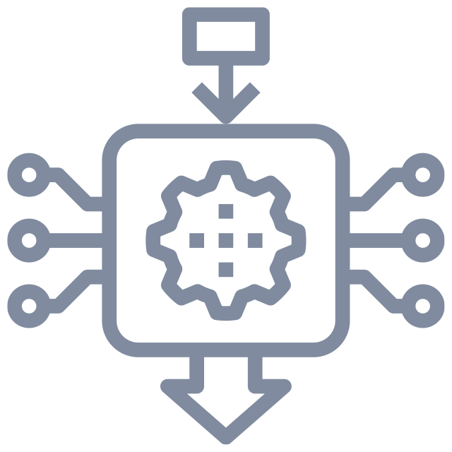

<ion-header>
  <ion-toolbar>
    <ion-buttons slot="start">
      <ion-button [routerLink]="['/help']" routerLinkActive="router-link-active">
        HELP
      </ion-button>
    </ion-buttons>
    <ion-title mode="ios">SIGNALS</ion-title>
    <ion-buttons slot="end">
      <ion-button (click)="sendToSell()">
        SELL
      </ion-button>
    </ion-buttons>
  </ion-toolbar>
</ion-header>

<ion-content>
  <ion-refresher slot="fixed" (ionRefresh)="doRefresh($event)">
    <ion-refresher-content pullingIcon="arrow-down" pullingText="" refreshingSpinner="crescent" refreshingText="">
    </ion-refresher-content>
  </ion-refresher>

  <div class="container pd-b-8">
    <div class="input-text search">
      <ion-input type="text" (keyup.enter)="refresh()" [(ngModel)]="search"
        placeholder="Search (Eg. ETH/USDT or Username / Company)">
      </ion-input>
    </div>

    <div class="selectors">
      <ion-badge (click)="applyTag(tag.value)" *ngFor="let tag of filterTags"
        [color]="appliedTags.indexOf(tag.value) > -1 ? tag.value === 0 ? 'warning' : 'primary' : 'medium'">
        {{ tag.name }}</ion-badge>
    </div>

    <div class="loading" *ngIf="loading">
      <div class="visual-sm mg-t-32">
        
      </div>
      <div class="label passive">Loading Signals...</div>
      <ion-spinner name="crescent"></ion-spinner>
    </div>

    <div class="empty" *ngIf="!loading && signals?.length < 1">
      <div class="image"></div>
      <div class="label">No signals found</div>
      <div class="message">Try a different search criteria</div>
    </div>

    <div class="list">
      <app-signal-list class="signal-list" *ngIf="!loading" [signals]="signals"></app-signal-list>
      <ion-infinite-scroll threshold="100px" (ionInfinite)="loadData($event)">
        <ion-infinite-scroll-content loadingSpinner="crescent">
        </ion-infinite-scroll-content>
      </ion-infinite-scroll>
    </div>
  </div>
  <div>

  </div>

</ion-content>